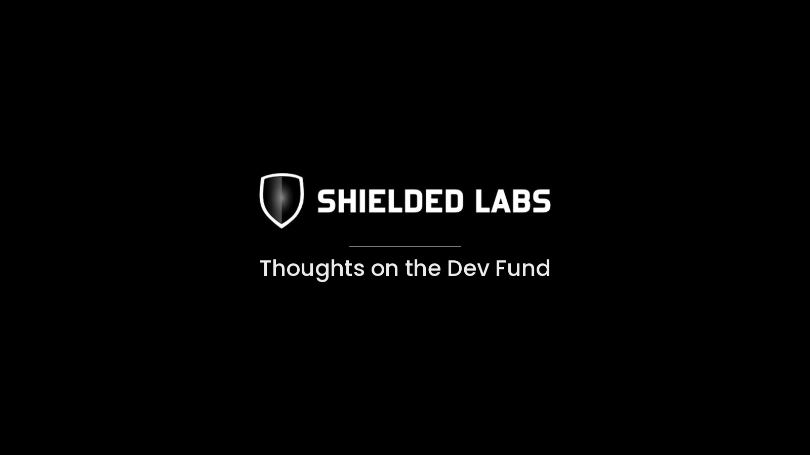

Thoughts on the Dev Fund

Maxime’s essay on the Dev Fund has generated a lot of discussion over the past week. It’s been good to see so many people engage with the question of whether the Dev Fund should continue, and more generally, how Zcash should fund development. I want to add a few thoughts of my own, and suggest a way of framing the conversation that I think might be more useful going forward.
First, some context on where I’m coming from. Shielded Labs is the only major Zcash organization that has never applied for or received Dev Fund funding, whether through direct allocations or grant funding. Virtually all of our funding has come from donations from Zcash holders and supporters. I also spent four years on the Zcash Community Grants (ZCG) committee and helped design and implement the Coinholder-Directed Retroactive Grants Program, where Shielded Labs now serves as a Key Holder Organization.
Maxime mentions Shielded Labs as an example of an organization that relies on private funding, which is correct. That doesn’t mean we agree with his conclusions, so I want to lay out where we actually stand.
What the Dev Fund built
Shielded Labs supports the Dev Fund. Zcash has relied on protocol funding since day one, first through the Founders’ Reward and then through the Dev Fund, and nearly everything that makes Zcash worth defending was built with that funding. Sapling, Orchard, and the Halo 2 proving system. Zebra, the Rust-based node implementation. Zashi (now ZODL), the first wallet that made shielded Zcash easy to use. Through ZCG, the Dev Fund has also funded dozens of development and community initiatives.
Whatever you think about the Dev Fund, it kept a team of world-class cryptographers and engineers working on Zcash through two bear markets and years of regulatory pressure. Without it, I don’t believe Zcash would have survived long enough for us to be having this conversation.
The Dev Fund has changed a lot over the years. From 2016 to 2020, 20% of the block reward went to the Founders’ Reward, which paid the founding team and the investors who funded Zcash’s launch. Some of those recipients donated a substantial portion of these funds to launch the Zcash Foundation. When the Founders’ Reward expired, the community adopted ZIP 1014, which kept the 20% but split it between the Electric Coin Company, the Zcash Foundation, and ZCG.
In 2024, the community and coinholders voted to stop funding organizations directly. Today, 8% of the block reward goes to ZCG and 12% goes to the coinholder grants program. Each of those changes came out of a long, contentious debate, and each one made the Dev Fund more decentralized and more accountable to the community and coinholders than the version before it. The Dev Fund will continue evolving, and that’s a good thing.
Two separate things
It’s worth separating the Dev Fund from the grants programs it funds, because I see people conflating the two. The Dev Fund is a protocol rule that directs 20% of each block reward toward ecosystem development, while ZCG and the coinholder grants program are the programs that decide where that money goes. The distinction is important because if the Dev Fund ended tomorrow, both programs would continue operating from their existing treasuries, which between them hold roughly 200,000 ZEC and several million dollars in cash. That’s already a substantial amount of money, and if the price of ZEC keeps rising it could grow into something much larger.
That leads to a question I think the community should discuss more directly. How large do we want these grants programs to be? Doing the same thing at a different scale is doing a different thing. A grants program with $10 million to allocate operates one way. A program with $10 billion operates very differently, and it carries a different kind of influence over the ecosystem and a different kind of risk. I’m not arguing that either program is too large today. I’m saying that the question of scale is separate from the question of whether the Dev Fund should exist at all. A 20% allocation that made sense at a $500 million market cap means something very different at $50 billion. We should be asking what the right size is, not just whether the Dev Fund should exist.
Beyond good and evil
I’d like to see the conversation move past Dev Fund good versus evil, or ZCG good versus evil. Not everyone is arguing that way, and some of the responses to Maxime’s essay have been thoughtful and nuanced. But a lot of the comments fall into one of a few camps. One says the Dev Fund is bad and private funding should replace it. Another says private funding means billionaires and VCs capturing Zcash, so the Dev Fund has to stay. A third says ZCG is bad because it’s a committee, and committees are bad. There may be some truth in each of those, but I don’t think they’re a useful place to start.
To be clear, I’m not arguing that the mechanism is irrelevant. A committee, a coinholder vote, and a private donor each come with their own incentives, their own failure modes, and their own risks of capture, and those differences are worth debating. But right now it seems like we’re arguing about them before we’ve agreed on what we want the funding to achieve. It’s a bit like an engineering team debating which language or frameworks to use before anyone has decided what to build. People get attached to their preferred mechanism and lose sight of the outcome. That’s made harder by the fact that people in the Zcash community have different priorities and different visions for what Zcash should be. Some care most about protocol security, others about adoption, others about developing new features and functionality.
So I’d rather start with the outcomes and work back to the mechanisms. What do we want Zcash’s funding to accomplish over the next decade? Are the grants programs delivering value to the Zcash protocol and to ZEC holders? What kinds of teams do we want to attract, and how do they need to be paid, given that some can’t fund work up front and require milestone-based funding? Are the grants programs getting too big? If they are, what are the alternatives? Should the 20% go back to miners, or should it be used for something else? These mechanisms are not necessarily in competition with each other, and once we’re clearer on what we want, the debate over which ones to use will be a lot more productive.
The track record
On the question of value, I think ZCG has a pretty decent track record. A couple of years ago at a Z|ECC Summit, where I first pitched making the coinholder grants program retroactive, I talked with someone from NEAR who told me that the vast majority of grant money, probably more than 90%, ends up wasted. Teams don’t finish, projects never launch, or they launch and nobody uses them. I think ZCG has a far better track record than that. Most of the teams it funds deliver on their milestones. It has paid for high-value community projects like ZecHub and Zcash Brazil. It’s funded several mobile and hardware wallet teams that have made it easy for people to use, store, and transact with shielded ZEC. And it funded the coinholder voting mechanism that was used in every governance and grants poll until the current one, which runs on a new system built by ValarDragon. Coinholder polling wouldn’t be where it is today without ZCG.
The ZCG-funded voting mechanism made the coinholder grants program possible, and in some ways the program improves on ZCG’s model. Coinholders decide directly which work gets funded, and because grants are paid out after the fact, they can look at the finished work and decide for themselves whether it added value to Zcash before any funding is allocated. It’s still not perfect, but it does help reduce waste. Turnout has been relatively low so far, as Maxime points out, but I expect that to change. The previous voting mechanism was difficult to use, and coinholder polling is still new. As the tooling improves and holding shielded ZEC gets easier, participation will increase.
A common criticism of ZCG I’ve seen comes down to the fact that coinholders don’t elect its members. That’s true, and the reason is historical. When ZCG was created in 2020, coinholder polling didn’t exist. What did exist was the Zcash Community Advisory Panel (ZCAP), which the Zcash Foundation set up as an advisory body of community members. The Foundation uses it to gauge community sentiment on governance questions and protocol changes, elect its board members, determine its priorities, and elect ZCG committee members. ZCAP was the best tool available at the time, and ZF was administering the ZCG program at that point in time, so that’s what ZCG used. The fact that it is still used today is because no one has tried to change it. If people are unhappy with the way ZCG members are elected, they can introduce a ZIP to propose an alternative. There’s no reason we couldn’t use both, with two members elected by coinholders and three elected by ZCAP, or the other way around. The point is that it wasn’t designed this way to shut coinholders out.
But, before we change how ZCG members are elected, it’s worth discussing whether we want to. There’s an argument for leaving it alone. Coinholders already direct 12% of the Dev Fund through the coinholder grants program. Handing them ZCG as well would put every grant decision in the ecosystem under the same constituency Perhaps it’s not a good idea to put all our eggs in one basket. Right now one program is run by community-elected members and the other is directed by coinholders, and that split has some value. Each one funds things the other might not, and neither group gets to decide everything. It’s a check on any one constituency having too much influence over where the money goes. I don’t have a firm view on it, but that’s the kind of question I’d like to see people debating.
What happens in 2028
My view is that both grants programs have added value to Zcash and are mostly working as intended. They also complement each other. ZCG funds work up front against milestones, and the coinholder grants program pays for work after it’s done, which appeals to different teams and different kinds of projects. They aren’t perfect, but if people don’t like parts of them, they can propose a change. The bigger question is what happens when the current Dev Fund expires at the next halving in 2028. That’s where I’d like to see the conversation focus. Do we want it to continue in its current form? If not, the default is that it ends and 100% of the block reward goes to miners. Those aren’t the only two options, though, and the space between them is where the interesting ideas are.
There are already plenty of ideas on the table, and none of them should be off limits. Zooko started this conversation on the forum earlier this year when he pointed out that ZCG’s treasury had grown from under $7 million to around $40 million, and asked what a grants program should do with that kind of money. I made the case for the NSM in that same thread. Maxime’s essay adds several more. Here are some of the options worth consideration, in no particular order.
What to do with the next Dev Fund
- Keep it as it is, with 8% to ZCG and 12% to the coinholder grants program.
- Keep the 20% but send all of it to the coinholder lockbox, ending the fixed 8% to ZCG.
- Let it expire and return 100% of the block reward to miners.
- Recycle some or all of it into future block rewards through the Network Sustainability Mechanism (NSM). Both grants programs will have accumulated significant ZEC by 2028, and if the price holds they’ll have enough to fund development for years. Recycling the 20% would extend the emissions curve, make more issuance available to secure the network later, and increase scarcity in the short term.
- Keep a Dev Fund but at a smaller allocation, scaled to the price of ZEC.
- Wind it down on a schedule. Reduce the allocation every halving until it reaches zero, so the ecosystem has a firm date to plan around.
- Direct the 20% to stakers under Crosslink. Crosslink adds a finality gadget alongside proof-of-work, which protects the network against rollbacks and chain reorgs without replacing mining. One objection to Crosslink is that paying stakers would come out of the miners’ share. If the Dev Fund’s 20% went to stakers instead, miners would keep their 80%, holders would earn yield for securing the network, and Zcash would get the added security of finality without cutting anyone’s existing allocation.
- Build out the mechanisms Maxime describes, like assurance contracts, donation intermediaries, and corporate funding, either alongside a smaller Dev Fund or instead of one.
- A Zcash venture capital arm, that makes investments into startups
- Combine several of the above. For example, keep a smaller allocation for ZCG and the coinholder lockbox, and send the rest to the NSM.
Where we go from here
The point of the list isn’t that any one of these is right. It’s that the window of acceptable ideas should be wide, not narrow, and that the conversation should be about how we want the Dev Fund to evolve rather than whether it’s good or bad. We have about two years before the current Dev Fund expires. That time will go by fast, so we should start now.
Here’s what I’d ask. If you have a view on what Zcash’s funding should accomplish, say so. If you have an idea that isn’t on the list above, post it. If you disagree with something I’ve written here, tell me why. The next Dev Fund decision will be made by whoever shows up to make it. The more people who participate, and the wider the range of views they bring, the better that decision will be.
Thanks to @zooko and @nate_zec for the review and thoughtful feedback.